오늘의 arXiv Top 15
2026-10-15 (목) · cs.CV / cs.LG / cs.RO / cs.CL / cs.AI New submissions 전수 평가
650
신규 논문
118
cs.CV
190
cs.LG
83
cs.RO
143
cs.CL
116
cs.AI
15
정밀 리뷰
분야별 필터
전체 15개 논문 표시 중
1
82점
Back on Track: Deployment-time Policy Improvement via World Model Planning
World Model
relevance 10/10
ICRA·IROS·RA-L 계열 양식 (추정)
Robotics (cs.RO)
가중치를 볼 수 없는 고정 policy의 진행이 멈추면, 작은 world model 안에서 짧은 교정 행동을 찾아 실행하고 제어를 돌려줌. 로봇 초기 자세와 물체 위치를 흔든 LIBERO-Goal 10개 과제에서 π0.5의 평균 성공률을 72.6%에서 81.5%로 올림.
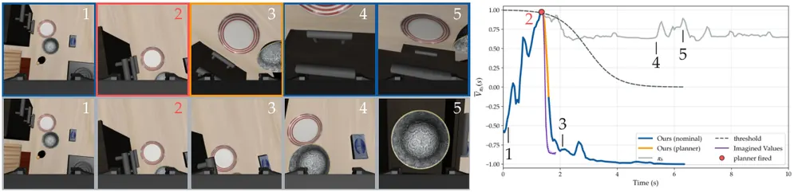
무슨 문제인가
π0.5 같은 visuomotor policy도 배포 중에는 스스로 알아채지 못하는 방식으로 실패함. 성능을 올리는 보통의 방법은 데이터를 더 모아 재학습하는 것인데, 이는 가중치와 학습 파이프라인이 있어야 가능함. 강한 policy가 API나 비공개 가중치로 배포되는 경우가 늘어서, 행동을 물어볼 수만 있는(black-box) policy를 고쳐 쓸 방법이 필요함. 기존 test-time 교정법은 policy 내부 sampling을 건드리거나, 매 순간 policy를 여러 번 부르거나, 영상 world model로 개입 한 번에 2초에서 20초를 씀.
어떻게 푸나
저자는 이 문제를 liveness filtering으로 정의함: 외부 감시기가 policy를 지켜보다가 과제 진행이 멈추면 잠깐 개입하고, policy가 다시 성공할 수 있는 상태로 돌려놓음. 감시에는 policy-conditioned liveness value를 씀. 이 값은 그 policy가 이어서 움직일 때 과제 완료에 얼마나 가까운지를 -1(완료 근처)에서 +1(완료에서 멂) 사이로 추정함. 학습 자료는 policy rollout 200개와 각 rollout의 성공·실패 라벨뿐이고, Bellman 식에 min 연산을 넣어 완료 여부를 거꾸로 전파함. value network 5개의 평균을 3프레임 동안 평활하고, 시간에 따라 1에서 0으로 내려가는 sigmoid 기준값을 넘으면 개입함. 개입이 시작되면 policy에 한 번만 물어 행동 묶음(action chunk)을 받고, 그 주변에서 후보 행동을 뽑아 CEM(Cross-Entropy Method, 표본 기반 최적화)으로 탐색함. 후보는 SigLIP2 특징 공간에서 다음 상태를 예측하는 29.6M 파라미터 ViT world model로 상상 rollout을 만들고, 같은 liveness value의 누적합이 작을수록 높게 평가함. 이 world model은 policy rollout에 더해, 행동 범위를 넓히려고 따로 모은 play 데이터(성공·실패 라벨 없는 상태·행동 기록)로 학습함. 후보 섭동은 학습 데이터 행동 묶음의 공분산 주성분 위에서 뽑아 시간적으로 매끄러운 행동만 나오게 하고, 고른 계획의 앞 몇 개 행동만 실행한 뒤 policy에 제어를 돌려줌.
결과
- LIBERO-Goal(같은 부엌 장면에서 언어 목표만 다른 조작 과제 10개)에서 로봇 초기 자세와 물체 위치를 흔든 조건을 씀. 이 조건에서 π0.5의 성공률은 72.6%임. 과제당 300회 짝지은 시행에서 평균 성공률이 81.5%로 오름. 개입이 실패 369건을 성공으로 바꾸고 성공 102건을 실패로 바꿈.
- 과제 4개 부분집합에서 black-box 방법끼리 비교함. 평균 성공률은 이 방법 80.9%, 같은 감시·개입 구조의 LatentSafe 59.2%, IQL 42.2%, TD3+BC 39.6%임. π0.5 3.3B 파라미터 전체를 성공 rollout으로 fine-tuning한 white-box 참고치 Filtered-BC는 78.2%임.
- liveness value를 distributional Monte Carlo value로 바꾸고 나머지를 그대로 두면 평균 성공률이 13.1퍼센트포인트 내림. ablation 중 가장 큰 하락임.
- 실제 Franka Panda에서 diffusion policy로 천 뚜껑 도시락 열기 과제 하나를 함. 성공률이 40%(120회)에서 60%(50회)로 오름. 초기 자세 섭동이 가장 큰 6.5도에서 9도 구간은 22.7%에서 70.6%로 오름. 계획 한 주기는 108ms이고 개입 중 제어 주기는 약 13.9Hz임.
한계
개입이 항상 도움이 되지는 않음: value가 틀려 성공할 시행에 끼어들기도 함. planner가 world model 오차 때문에 실제로는 안 되는 행동을 고르기도 하며, 얇은 와인병 과제는 1.0퍼센트포인트 내림. 과제마다 성공·실패 라벨이 붙은 policy rollout이 있어야 해서 zero-shot 방법이 아님. world model용 play 데이터는 선택 사항이지만 LIBERO 실험에서는 시연 53분을 함께 씀. 실로봇은 과제 하나이고 기준 policy와 시행 수가 달라 짝지은 비교가 아니며, 코드 공개 여부는 본문에서 확인 불가임.
누리랩 연구와의 연결
- failure detection과 recovery를 하나의 값으로 묶은 사례임. 같은 liveness value가 감지 신호와 world model planning 목표를 겸하므로, VLA failure detection 연구에서 감지만 하는 방법과의 비교 기준이 됨.
- 가중치를 건드리지 않는 test-time optimization이라 π0.5 같은 VLA에 그대로 붙일 수 있음. 작은 latent world model로 100ms대 planning이 가능하다는 점은 실로봇 inference-time planning 설계에 참고가 됨.
2
78점
Hyperspherical Contrastive Representations Unlock Planning and Exploration
RL
relevance 9/10
ICLR 양식 (추정)
Machine Learning (cs.LG)
contrastive representation을 단위 구면 위에 학습해 두고, 현재 상태와 목표 사이 중간 목표(waypoint)를 구면 보간으로 바로 계산하고 그 개수도 문제마다 고르게 함. reward·demonstration 없이 큐브 8개 쌓기에 성공했고, 같은 과제에서 호기심 기반 탐색 방법인 ICM·RND는 10억 step 동안 한 번도 성공하지 못함.
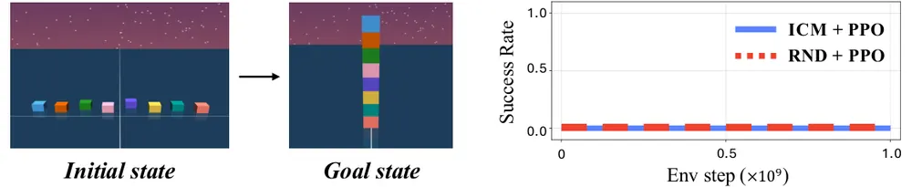
무슨 문제인가
goal-conditioned RL은 멀리 있는 목표에 도달하는 과제에서 성공을 거의 못 얻어 학습이 시작되지 않음. 계층형 방법은 과제를 중간 목표로 나누지만, 대부분 waypoint 개수나 subgoal까지의 step 수를 고정해 둠. 큐브 하나 놓기와 8층 탑 쌓기는 필요한 단계 수가 다른데, 고정된 개수로는 쉬운 문제는 불필요하게 쪼개고 어려운 문제는 덜 쪼갬. graph search 방법은 개수를 바꿀 수 있지만 graph를 만드는 계산이 들고 방문한 상태 범위에 기댐.
어떻게 푸나
C-Slerp(Contrastive Planning via Spherical Linear Interpolation)는 CRL(contrastive RL: 현재 상태와 미래 상태의 표현 내적이 도달 확률을 나타내도록 InfoNCE로 학습하는 방법)을 바탕으로 함. 상태 표현 ψ(s)를 단위 구면 위에 두고, 두 상태의 시간 관계를 ψ(s)ᵀRψ(s⁺)로 점수 매김. 여기서 R은 학습하는 회전 행렬이고 이동 방향의 비대칭을 담음. waypoint 추론을 KL 최소화 문제로 놓으면, K개 waypoint 표현의 평균은 ψ(s)와 R^(K+1)ψ(g) 사이 구면 선형 보간(slerp) 수식 하나로 바로 계산됨. 그래서 별도 high-level policy 네트워크나 graph search가 없음. waypoint 개수 K는 ψ(s)를 R로 K+1번 돌린 방향과 ψ(g)가 얼마나 맞는지를 softmax로 바꿔 상태·목표 쌍마다 뽑음. 마지막으로 low-level policy의 critic 점수가 기준값 이상인 waypoint 중 가장 먼 것을 골라 10 step 동안 따라가게 함.
결과
- BuilderBench(큐브를 목표 구조로 쌓는 조작 benchmark)와 JaxGCRL(Ant·Humanoid 미로 이동) 12개 과제에서 CRL, RIS, Online HIQL, L3P, SAC + HER와 비교함. gripper로 큐브 3~5개를 쌓는 과제 모두에서 성공한 방법은 C-Slerp뿐이고, 대부분의 baseline은 성공률 0에 머묾. 2-tower처럼 짧은 과제에서는 CRL과 비슷함. 구체적 성공률 수치는 학습 곡선으로만 제시되어 본문에서 확인 불가임.
- waypoint 개수를 K=0, 1, 2, 4로 고정한 변형은 8-tower에서 거의 진전이 없고 Ant U5 Maze에서도 최종 성공률이 낮음. 개수를 늘린다고 성능이 계속 오르지도 않음. 따라갈 waypoint를 고정 순번으로 고르는 변형도 환경마다 최선이 달라, 둘 다 적응형으로 골라야 가장 높음.
- 목표 하나를 미로의 가장 먼 지점에 고정한 single-goal 설정에서 C-Slerp가 가장 높은 성공률을 보임. CRL과 L3P를 뺀 baseline은 성공이 0임.
- 모든 곡선은 seed 5개 평균임. 큐브 8개 탑은 gripper 없이 큐브에 직접 힘을 주는 환경에서 수행한 결과임.
한계
모든 실험이 시뮬레이션의 state 관측이며, 이미지 입력과 실로봇은 시험하지 않았음. 학습에 수억에서 수십억 step의 환경 상호작용이 들어 실로봇에 바로 쓰기 어려움. 이 보간 수식은 critic이 Bayes 최적이고 표현 분포가 구면 위에서 균일하다는 가정과 작은 분산 근사에 기댐.
누리랩 연구와의 연결
- 학습된 표현의 기하만으로 inference-time에 waypoint 개수와 위치를 정하는 방식이라, long-horizon manipulation의 test-time planning과 skill chaining 연구에서 비교 대상으로 쓸 수 있음.
- critic 점수로 policy가 도달 가능한 가장 먼 subgoal을 고르는 규칙은, VLA의 subgoal 실패 예측이나 재계획 시점 판단에 옮겨 볼 수 있음.
3
78점
When Do Discrete Actions Make Good Continuous Controllers?
VLA
relevance 8/10
Robotics (cs.RO)
로봇 action을 연속값 대신 bin 토큰으로 예측하는 action head 4종을 같은 조건에서 비교해, 균등 bin 토큰을 discrete flow로 생성하는 action head가 연속값 방식과 같거나 더 높은 성공률을 낸다는 것을 보임. RoboCasa에서 discrete flow는 53.9%로 continuous flow 52.7%, continuous regression 38.8%보다 높음.
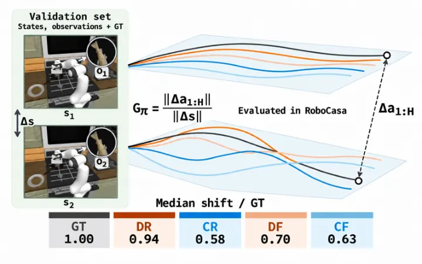
무슨 문제인가
π0 계열을 비롯한 현재 VLA는 대부분 action을 연속값 벡터로 예측함. 연속값은 손실이 없어서 정밀 제어에 필요하다는 믿음이 널리 퍼져 있음. 그러나 LLM과 멀티모달 모델은 모두 이산 토큰을 입출력으로 쓰므로, 로봇 action만 연속값이어야 하는지는 따로 검증된 적이 없음. 기존 비교는 backbone과 학습 설정이 서로 달라 action 표현 자체의 효과를 떼어 보기 어려웠음.
어떻게 푸나
action head를 표현(연속 또는 이산)과 계산 방식(한 번에 예측 또는 반복 생성)으로 나눠 네 가지를 만듦. CR(continuous regression)은 제곱오차로 action chunk를 한 번에 회귀하고, CF(continuous flow)는 flow matching으로 연속 action을 여러 단계에 걸쳐 생성함. DR(discrete regression)은 각 action 좌표를 512개 균등 bin 중 하나로 보고 위치마다 독립 분류함. DF(discrete flow)는 discrete flow matching으로 손상된 토큰 chunk를 여러 단계에 걸쳐 깨끗한 토큰으로 바꿈. 입력은 이미지·언어·proprioception이고 출력은 상대 end-effector 좌표의 action chunk이며, 이산 head는 bin 중심값으로 되돌려 실행함. 네 head는 같은 backbone을 쓰고, RoboMimic 단일 과제 scratch 학습과 PaliGemma 기반 다중 과제 VLA 학습에 모두 적용함. 이후 jerk ratio(예측 chunk의 3차 차분 크기를 정답 chunk와 나눈 비율), 관측 변화에 대한 반응도, 토큰 모드 혼합 수를 재서 성능 차이의 원인을 분석함.
결과
- RoboCasa(주방 시뮬레이션 조작 과제 모음) 500 episode 합산 성공률에서 DF는 53.9%, CF는 52.7%, CR은 38.8%임. DR은 guidance 없이 27.1%이고, classifier-free guidance(CFG) 가중치 2를 주면 49.2%로 오름.
- 저자는 DR의 약점을 factorization error로 설명함: 토큰을 위치마다 독립으로 고르면 서로 다른 행동 모드의 조각이 한 chunk에 섞인다는 뜻임. DF는 chunk 하나에 섞인 모드 수를 DR의 5.28분의 1로 줄이고, refinement 10단계 이상에서 평균 1개 아래로 낮춤. CFG를 걸어도 end-effector 위치 오차는 학습 데이터 출처 8개(RoboCasa365 6종, LIBERO-plus, DROID) 대부분에서 1mm 넘게 줄지 않음. 따라서 성공률 상승은 정밀도보다 chunk 일관성 개선으로 해석됨.
- 관측이 4 step 바뀔 때 예측 chunk가 바뀌는 정도를 전문가 대비 비율로 재면 DR 0.94, DF 0.70, CF 0.63, CR 0.58임. 이산 head가 관측 변화에 더 크게 반응함.
- 손상 토큰이 정답 bin 근처에 모이도록 corruption 경로를 바꾼 metric path DF는 52.8%임. 균등 bin 대신 다른 action tokenizer(nFSQ, FAST, RVQ)를 쓴 DF는 52.4%, 46.2%, 38.2%임. 모두 균등 bin DF의 53.9%를 넘지 못함. 실로봇 과제 3개(병 던지기, 펜 뚜껑 열기, 머그 세우기)의 결과는 그림 막대로만 있어 구체 수치는 본문에서 확인 불가임.
한계
시뮬레이션 비교는 RoboMimic 4개 과제, RoboCasa, LIBERO(시뮬레이션 조작 과제 모음)에 한정되고, 실로봇은 과제 3개뿐임. 반복 생성과 CFG는 head 계산을 늘리는데, 저자는 성공률만 비교하고 실행 시간은 비교하지 않음. 합성 함수 실험에서는 부드러운 미세 변화를 맞출 때 CR 오차가 DR보다 약 250배 낮아, 이산 방식이 항상 더 정밀한 것은 아님. 코드와 checkpoint는 출판 후 공개 예정이라고만 적혀 있음.
누리랩 연구와의 연결
- VLA action head를 고를 때 연속값 flow 대신 discrete flow를 써도 성능이 유지된다는 근거임. 이산 토큰 action은 언어 모델의 test-time reasoning, CFG, 토큰 확률 기반 불확실성 추정을 그대로 쓸 수 있어 failure detection과 test-time optimization 연구에 바로 이어짐.
- factorization error와 모드 혼합 수 측정법은 action chunk 안에서 행동이 섞여 실패하는 경우를 진단하는 지표로 쓸 수 있음.
4
76점
FACT: A Multimodal Force-Action-Track Foundation Model for Human-to-Robot Dexterity
Dexterous Manipulation
relevance 9/10
IEEE 학술지 계열 양식 (추정)
Robotics (cs.RO)
힘 측정이 들어간 사람 손 조작 데이터 2,000시간으로 미리 학습하고, 행동과 미래 손끝 힘을 함께 생성하는 양손 dexterous policy FACT를 만듦. 실로봇 10개 과제 중 시험관 뚜껑 열기 성공률이 T-Rex의 20%에서 80%로 오름.
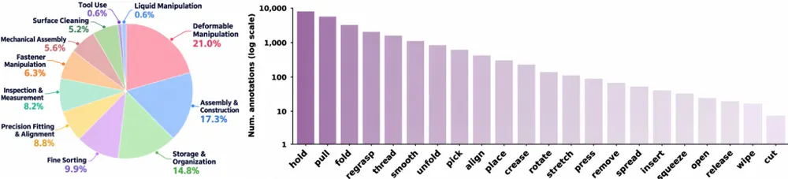
무슨 문제인가
양손 dexterous 조작을 로봇 teleoperation으로 대량 수집하는 것은 비싸므로 사람 시연 데이터가 대안으로 쓰임. 그러나 기존 사람 조작 데이터셋은 영상과 손 움직임만 담고 접촉 힘은 재지 않음. 피펫 다이얼 돌리기나 하프 줄 뜯기처럼 손가락을 얼마나 세게 누르는지가 성패를 가르는 과제에서는 이 정보가 빠지면 사람 데이터를 쓰기 어려움. 가장 가까운 기존 방법 T-Rex는 촉각을 쓰지만 과거 힘 기록을 압축한 코드로 입력에만 넣고, 행동이 만들 힘은 예측하지 않음.
어떻게 푸나
먼저 EgoForce라는 사람 조작 데이터셋을 모음. 머리와 양 손목의 카메라 3대, 손끝과 손바닥에 압력 센서가 달린 촉각 장갑을 쓰고, 공압 장치로 센서 값을 뉴턴 단위 힘으로 보정함. 규모는 약 2,000시간, 40,000 episode, 1,000개 과제, 참가자 1,000명임. FACT는 두 단계 flow matching 모델이며 EgoForce와 T-Rex 로봇 데이터 100시간을 섞어 처음부터 끝까지 함께 학습함. 1단계 Track-Guided Coarse Planner는 Wan2.2 5B video DiT 기반이고, 지시문, 카메라 영상, 로봇 상태, 과거 visual track(손과 배경 위 점들의 화면상 궤적)을 받음. 이 단계는 미래 영상, 미래 track, 행동을 함께 생성하다가 noise가 40% 남은 지점에서 멈추고 덜 다듬은 행동과 내부 표현을 넘김. 2단계 Force-Action Joint Refiner(6층 transformer)는 이를 받아 남은 행동과 미래 손끝 6축 힘을 bidirectional attention으로 함께 denoise하며, 지금 잰 촉각 값은 조건으로만 씀. 출력은 양팔 손목 자세와 손 관절 22개씩의 16스텝 행동이고, 0.2초마다 새 촉각 값으로 2단계만 다시 돌려 남은 행동을 고침.
결과
- 실로봇 10개 과제(피펫 작업, 시험관 뚜껑 열기, 신발끈 묶기, 카드 섞기, 드라이버 쓰기, 하프, 실로폰 등)를 과제당 10회 평가함. fine-tuning 데이터는 과제마다 로봇 궤적 10개와 사람 시연 90개임. 성공/실패로 채점하는 7개 과제의 평균 성공률은 FACT 41.4%, T-Rex 8.6%, π0.5 1.4%임.
- 피펫 다이얼을 420µL에서 400µL로 맞추는 과제에서 다이얼을 실제로 돌린 횟수는 10회 중 FACT 5회, T-Rex 2회임. 돌린 경우의 평균 오차는 6.4µL 대 14µL임.
- 사전학습에서 사람 데이터의 힘 정보만 뺀 경우(사람 촉각 입력도 가림), 시험관 뚜껑 열기 성공률이 80%에서 0%로, 하프에서 깨끗하게 낸 음의 수가 10개 중 평균 6.7개에서 2.0개로 내림. 여러 물건 한 손에 쥐기는 40%로 같음.
- 미래 힘 예측만 뺀 FACT는 같은 조건에서 시험관 뚜껑 열기 40%, 하프 0개로 내림. fine-tuning 데이터의 로봇 대 사람 비율을 10:90에서 50:50으로 바꿔도, 별도 과제인 마이크로원심관 뚜껑 젖혀 열기는 50%에서 60%로 조금 오르는 데 그침.
한계
평가는 과제당 10회이고 같은 장면과 물체에서 위치만 바꿔 측정했으므로 과제 간 차이 일부는 통계적으로 확실하지 않음. 사람 장갑은 압력만 재므로 사람 데이터의 접선 방향 힘과 비틀림은 0으로 둠. 예측한 미래 힘은 학습 신호로만 쓰고 제어 목표로는 쓰지 않음. T-Rex와는 사전학습 데이터와 구조가 함께 달라서 차이가 어느 요소에서 왔는지는 ablation으로만 일부 가려짐. 코드와 데이터셋 공개 여부는 본문에서 확인 불가임.
누리랩 연구와의 연결
- 행동과 함께 그 행동이 만들 미래 접촉 힘을 생성하는 구조는 촉각 기반 failure detection에 바로 쓸 수 있음. 예측 힘과 실제 측정 힘의 차이로 신발끈 잡기 실패 같은 접촉 실패를 잡는 연구로 이어짐.
- video·track 예측을 사람과 로봇이 공유하는 표현으로 쓴 VLA 설계라서, world model 기반 policy와 dexterous manipulation 연구에서 비교 대상이 됨.
5
74점
What Matters for World Modeling in Vision-Language-Action Models?
World Model
relevance 9/10
ICLR 양식 (추정)
Robotics (cs.RO)
VLA에 world model을 붙이는 방식 4가지와 미래 장면 표현 6가지를 같은 backbone과 학습 조건에서 비교함. 예측 모듈을 VLM과 분리한 방식이 학습 분포 밖(OOD) 시험, 사전학습 VLA 적용, 동적 과제에서 더 안정적이었고, 실로봇 과제 4개 평균 성공률을 45.0%에서 73.8%로 올림.
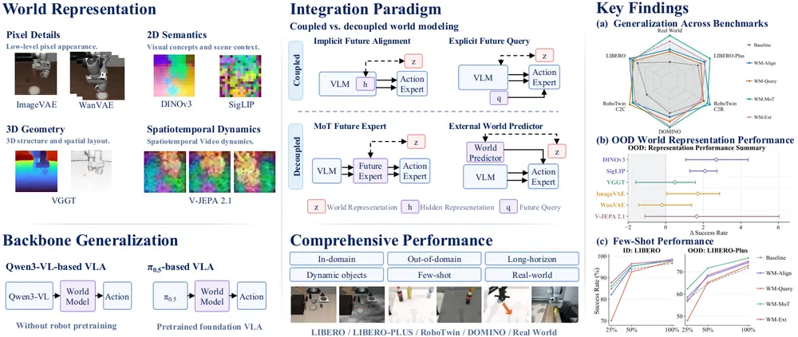
무슨 문제인가
VLA는 대부분 현재 관측만 보고 행동을 내므로 장면이 어떻게 바뀔지 고려하지 못함. 그래서 미래 장면을 예측하는 world model을 VLA에 붙이는 연구가 늘었음. 그런데 기존 논문들은 미래를 무엇으로 표현할지, 예측을 policy에 어떻게 연결할지, 어떤 backbone을 쓸지를 한꺼번에 다르게 골랐음. 그 결과 성능 향상이 어느 설계에서 나왔는지 가려낼 수 없었음.
어떻게 푸나
저자들은 기존 연구를 예측 결과가 policy에 들어가는 경로에 따라 4가지로 나눔. WM-Align은 VLM 중간 visual token이 미래 특징을 맞히도록 보조 loss만 걸고, 추론 때는 그 예측 head를 버림. WM-Query는 VLM 입력 끝에 미래 예측용 query token을 붙이고, action expert가 이 token을 참조함. WM-MoT는 VLM 옆에 따로 학습하는 Future Expert 흐름을 두고(MoT: Mixture-of-Transformers), action expert가 모든 층에서 그 중간 특징을 참조함. WM-Ext는 별도 Transformer world predictor가 최종 미래 특징을 만들고 이를 action expert에 넘김. 앞의 두 방식은 VLM과 결합된 방식이고, 뒤의 두 방식은 예측을 VLM에서 분리한 방식임. 네 방식 모두 고정된 encoder가 미래 관측에서 뽑은 특징을 정답으로 삼아 cosine loss와 flow-matching 행동 loss를 함께 학습함. 정답 특징은 pixel(ImageVAE, WanVAE), 2D 의미(DINOv3, SigLIP), 3D 기하(VGGT), 영상 시공간(V-JEPA 2.1) 6가지로 바꿔 봄. 주 backbone은 Qwen3-VL-2B이고, 사전학습 VLA인 π0.5에도 네 방식을 붙여 봄.
결과
- 표현의 효과는 결합 방식에 따라 순위가 뒤바뀜. LIBERO-Plus(LIBERO 조작 과제에 카메라, 조명, 배경, 언어 등 7가지 교란을 준 OOD 시험)에서 V-JEPA 2.1은 WM-MoT와 쓰면 baseline보다 6.04퍼센트포인트 오르고 WM-Ext와 쓰면 1.10퍼센트포인트 내림. DINOv3와 SigLIP만 네 방식 모두에서 LIBERO와 LIBERO-Plus 평균을 올림.
- RoboTwin 2.0(양팔 조작 과제 50개)에서 시연 길이 300 step을 넘는 긴 과제의 평균 성공률이 baseline 30.7%에서 네 방식 47.2~57.0%로 오름. 짧은 과제의 향상은 5.5~8.6퍼센트포인트에 그침. 학습과 다른 무작위 환경에서 평가하면 짧은 과제는 WM-Align 외 세 방식이 baseline보다 내림.
- π0.5에 붙이면 결합 방식은 성능을 낮춤. RoboTwin 2.0 평균 성공률이 π0.5 69.1%에서 WM-Align 63.6%로 내리고, 무작위 환경에서도 46.4%에서 41.0%로 내림. 분리 방식인 WM-Ext는 71.7%, WM-MoT는 무작위 환경에서 49.7%로 오름.
- 실제 Franka Research 3 로봇에서 정적 과제 2개와 움직이는 토마토를 다루는 동적 과제 2개를 방법당 과제별 40회 평가함. 네 방식 모두 world model 없는 baseline의 평균 성공률 45.0%를 넘었고(56.3~73.8%), WM-MoT가 가장 높음. 동적 과제인 토마토 집기는 baseline 37.5%에서 WM-MoT 75.0%로 오름.
한계
새 방법을 내놓은 논문이 아니라 기존 설계를 저자들이 단순화해 다시 구현한 비교 연구임. 따라서 원래 논문들의 구현 그대로의 성능을 비교한 것은 아님. 주 비교는 Qwen3-VL-2B 하나로 했고, 동적 조작 시험 DOMINO에서 최고 성공률도 15.5%로 낮음. 본문에서 코드 공개 주소는 확인 불가함.
누리랩 연구와의 연결
- VLA에 world model을 붙일 때 어떤 표현과 어떤 연결 경로를 고를지 정하는 기준표로 쓸 수 있음. 특히 사전학습 VLA를 쓸 때 VLM 특징에 보조 loss를 거는 방식이 성능을 낮춘다는 결과는 바로 참고할 만함.
- 미래 특징을 예측하는 Future Expert나 외부 predictor는 예측 특징과 실제 관측 특징의 차이를 재는 방식으로 failure detection 신호로 바꿔 쓸 여지가 있음. 다만 이 논문은 그런 실험을 하지 않음.
6
74점
Robota-Embed: Unified VLA Embeddings for Robot In-Context Learning and Evolution
VLA
relevance 9/10
Robotics (cs.RO)
로봇의 지금 상태(지시문·장면·동작)와 과거 경험의 다음 4초를 같은 vector 공간에 넣는 retrieval embedding을 만듦. 이것으로 이어질 장면을 찾아 policy context로 씀. 정확한 다음 구간을 1순위로 찾는 비율이 Gemini Embedding 2의 25.2%에서 47.3%로 오름.
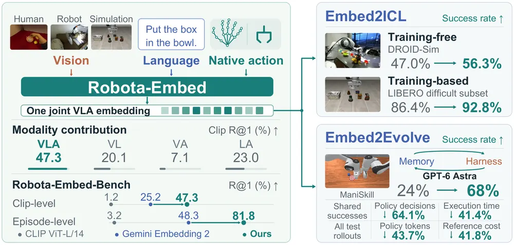
무슨 문제인가
policy가 context로 받은 시연을 보고 행동하는 robot in-context learning이 늘면서, 쌓인 경험 중 무엇을 꺼내 줄지가 제어 문제의 일부가 됨. 기존 multimodal embedding은 그림과 글만 맞추므로 같은 물체와 같은 지시문을 가진 장면은 구별하지 못함. 그릇에 손을 뻗는 순간과 물건을 놓고 손을 빼는 순간은 겉보기가 비슷해도 다음에 할 동작이 다름. 그래서 과제와 함께 지금 실행 단계까지 맞는 다음 구간을 찾아야 함. 질의와 후보 양쪽의 검색 key에 동작 정보를 함께 넣은 embedding은 없었음.
어떻게 푸나
Robota-Embed는 질의와 후보를 각각 하나의 정규화된 vector로 만들고 cosine similarity로 순위를 매김. 질의는 지시문, SAM3로 잘라 낸 상호작용 영역 이미지, 그 시점의 native action(데이터마다 원래 쓰던 동작 표현)으로 이루어짐. 후보는 같은 지시문, 그 시점 직후 4초 영상, 그 4초의 action으로 이루어짐. 두 쪽은 Cosmos3-Edge 4B Transformer를 함께 쓰고, 질의용·후보용 adapter와 데이터마다 다른 action projector만 따로 둠. 학습은 정확한 다음 구간을 positive로 두는 양방향 InfoNCE가 중심임. 과제·물체·동작이 규칙상 어긋나는 후보만 negative로 쓰고, 애매한 후보는 loss에서 뺌. 입력 하나를 바꿔 넣으면 유사도가 내려가도록 하는 margin loss와 embedding이 한쪽으로 몰리지 않게 하는 정규화를 더함.
결과
- Robota-Embed-Bench(EgoDex·DROID·LIBERO·RoboMIND의 질의 4,000개를 공유 후보 8,000개에서 찾는 benchmark)를 씀. 짝이 되는 4초 구간을 1순위로 찾는 비율(clip-level R@1)이 47.3%이고, 가장 강한 baseline인 Gemini Embedding 2는 25.2%임. 같은 episode의 구간이면 맞힌 것으로 치는 episode-level R@1은 81.8% 대 48.3%임.
- DROID에서 backbone·데이터·학습량을 맞추고 다시 학습하면, action을 뺐을 때 clip-level R@1이 78.7%에서 59.8%로 내림. vision을 뺐을 때는 76.8%로 내림.
- Embed2ICL(검색한 시연을 policy context로 넣는 방식)에서 학습 없이 world action model policy인 DreamZero의 visual cache를 채움. DROID-Sim 과제 3개 평균 성공률이 47.0%에서 56.3%로 오르고, 무작위 시연을 넣으면 36.0%로 내림. LIBERO 어려운 과제 5개에서는 검색 context를 쓰도록 fine-tuning한 world action model policy Fast-WAM의 성공률이 86.4%에서 92.8%로 오르고, 무작위 시연 token이면 88.0%임.
- Embed2Evolve(시도마다 경험 memory를 늘리고 검색 개수·갱신 주기·history 길이를 고르는 방식)를 관측과 실행 기록으로 로봇 action을 만드는 고정된 policy GPT-6 Astra에 붙임. ManiSkill 과제 5개 평균 성공률이 24%에서 68%로 오름. 같은 절차를 Omni-Embed-Nemotron-3B로 돌리면 33%임. rollout당 policy token은 Robota-Embed 쪽이 약 0.518M, Omni-Embed-Nemotron-3B 쪽이 약 2.531M, Direct가 0.921M임.
한계
실로봇 실험은 과제 3개를 12회씩 돌린 부분 점수(task progress)만 보고하고 성공률은 없음. Embed2Evolve는 ManiSkill 시뮬레이션 5개 과제뿐이고, embedding 비교는 각자 따로 진화시킨 Embed2Evolve 설정(memory와 context 사용 방식)끼리의 비교라 encoder만 바꾼 효과로 가를 수 없음. 검색 구간은 4초로 고정되고, 학습한 데이터 출처는 4개뿐이며, 본문에 코드 공개 주소는 없음.
누리랩 연구와의 연결
- 지금 실행 단계에 맞는 과거 경험을 꺼내는 robot memory의 검색 key 설계 사례임. 실패한 시도도 memory에 넣어 다음 시도에 쓰므로 failure recovery와 test-time adaptation 연구에서 retrieval 부분의 기준선으로 쓸 수 있음.
- clip-level과 episode-level R@1의 차이(47.3% 대 81.8%)는 과제는 찾아도 실행 단계는 못 찾는 경우가 많다는 뜻임. 단계 인식이 필요한 failure detection에서 action을 key에 넣는 설계를 시험해 볼 근거가 됨.
7
74점
ACRO: Actor-Critic Rollout Orchestration
VLA
relevance 9/10
ICLR 양식 (추정)
Robotics (cs.RO)
고정된 VLA가 실패할 것 같으면 지나온 경로 위의 더 나은 지점으로 로봇을 되돌려 같은 policy가 다시 시도하게 하는 실행 제어 층 ACRO를 제안함. 되돌아가는 동작까지 같은 물리 step 예산에 넣고도 실로봇 3개 과제 성공률이 43.3%에서 65.0%로 오름.
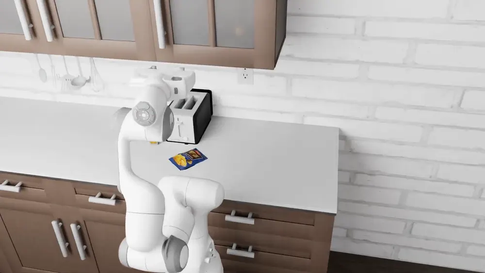
무슨 문제인가
같은 VLA가 같은 과제를 어떤 실행에서는 성공하고 어떤 실행에서는 실패함. 그래서 한 번의 실행 결과가 policy의 실제 능력보다 낮게 나올 수 있음. RoboMonkey처럼 현재 관측에서 행동 후보를 골라 주는 방법은 지금 상태가 이미 나쁘면 로봇을 어디로 옮겨야 하는지 알려 주지 않음. CycleVLA처럼 외부 VLM이 subtask 경계에서 되돌아갈지 정하는 방법은 그 판단이 배치된 policy의 실제 복구 능력과 이어져 있는지 불분명함.
어떻게 푸나
ACRO(Actor-Critic Rollout Orchestration)는 VLA를 고치지 않고 그 바깥에서 언제 끼어들고 어디서 다시 시작할지만 정함. Critic은 base VLA를 끊지 않고 돌린 rollout(SimplerEnv 1,230개, RoboCasa 1,200개)으로 학습함. 입력은 VLA backbone 출력과 로봇 고유 상태이고, 출력은 정해진 시간 안에 과제를 끝낼 확률임. Q는 지금 제안된 action chunk를 실행했을 때의 확률이고, V는 어떤 상태에서 policy가 이어 갈 때의 확률임. 끝나지 않은 rollout도 쓰려고 생존 분석의 censored loss로 완료 시점까지의 hazard rate를 학습함. 최근 Q 8개를 logistic regression에 넣어 실패가 예상되면 Actor가 켜짐. Actor는 이번 실행에서 지나온 상태들 가운데 V가 가장 높은 지점을 목표로 고름. Trajectory Retraction은 기록된 end-effector 경로를 직선 구간 몇 개로 줄여 그 지점까지 되돌아감. 각 직선 구간은 방문했던 위치에서 2cm 안쪽을 지남. 도착하면 물체는 그대로 둔 채 같은 VLA가 새 관측을 받아 다시 실행함.
결과
- SimplerEnv Bridge(탁상 조작 과제 4개)에서 GR00T N1.7의 전체 성공률이 49.6%에서 60.0%로 오름. RoboCasa(가정 주방 조작 과제 12개)에서 π0.5는 60.7%에서 68.0%로 오름. 두 환경 모두 되돌아가는 동작을 표준 step 한도 안에 포함한 조건임.
- 같은 Critic으로 action chunk 8개 중 하나를 고르는 RoboMonkey 변형은 RoboCasa 64.8%, SimplerEnv 47.5%로 ACRO보다 낮음. 다만 RoboCasa Pick-and-Place에서는 RoboMonkey 변형(68.0% 대 65.2%)에 ACRO가 짐. Eggplant in Basket에서는 subtask 경계에서 외부 VLM이 되돌아갈지 정하는 CycleVLA(66.7% 대 51.7%)에 짐.
- 정해진 간격으로 되돌아가는 Periodic rewind와 비교하면 시행당 복귀 횟수는 Periodic rewind 1.04회, ACRO 1.06회로 비슷함. 성공률은 Periodic rewind 59.5%, ACRO 68.0%이고, 복귀에 쓴 step은 92.7 대 46.3으로 ACRO가 절반 정도임(RoboCasa 600회).
- 실로봇에서 π0.5로 집어 놓기, 큐브 쌓기, 버튼 누르기를 과제당 20회 평가함. 전체 성공률이 43.3%에서 65.0%로 오르고, 큐브 쌓기는 20.0%에서 55.0%로 오름.
한계
되돌아갈 때 물체를 원래대로 돌리지 않으므로, 물체를 떨어뜨리거나 밀어 버린 실패는 지나온 경로로 돌아가도 복구가 안 될 수 있음. 비교는 물리 step만 맞췄고 Critic 추론 시간이나 실제 걸린 시간은 재지 않음. 실로봇 실험은 과제 3개, 60회이고 base VLA하고만 비교했으며 코드는 아직 공개되지 않음.
누리랩 연구와의 연결
- failure detection과 recovery를 한 Critic 안에서 묶은 사례임. 실패 예측 신호가 복귀 목표 선택까지 이어지므로 우리 failure recovery 연구의 직접 비교 대상이 됨.
- policy를 고정하고 실행 시간 예산을 더 주어 성공률을 올리는 test-time 방법임. 지나온 상태의 V 기록을 복귀 후보로 쓰는 점은 robot memory 연구와도 이어짐.
8
74점
Action Jets: Learning the Local Shape of the Action-conditioned Data Manifold
World Model
relevance 8/10
ICLR 양식 (추정)
Computer Vision and Pattern Recognition (cs.CV)
현재 장면에서 action을 조금씩 바꿀 때 다음 이미지의 latent가 어떻게 변하는지를 상태마다 3차 Taylor 다항식으로 미리 뽑아 두고, 후보 action은 행렬 곱으로만 평가하게 함. BridgeData V2에서 후보 16개 평가 시간이 54ms로, WorldGym 17,501ms와 IRASim 91,431ms보다 짧음.
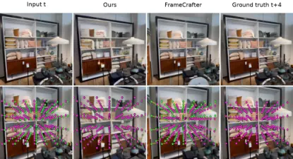
무슨 문제인가
Action-conditioned video world model로 후보 action을 고르려면 후보마다 생성 모델을 한 번씩 다시 돌려야 함. IRASim은 후보 하나에 diffusion step 25번, WorldGym은 40번을 쓰므로 후보 수를 늘리면 시간이 그대로 늘어남. 그래서 planner가 실시간으로 비교할 수 있는 후보 수가 몇 개로 제한됨. 저자들은 짧은 horizon planning에는 현재 상태 주변의 국소 정보만 있으면 된다고 보고, 이 국소 정보를 따로 뽑아 재사용하는 방법을 찾음.
어떻게 푸나
Action Jet은 고정된 현재 장면에서 action을 바꿀 때 도달하는 latent 상태들이 이루는 저차원 곡면(action-conditioned data manifold)을 3차 Taylor 다항식으로 근사하는 network임. 먼저 학습된 생성 모델을 고정해 두고, action 축 하나씩 +δ와 -δ로 넣어 만든 두 이미지의 latent 차이로 축별 Jacobian을 잼. 이 Jacobian은 이미지 token마다 action 1단위당 어느 방향으로 움직이는지를 나타냄. 다음으로 ViT geometry encoder가 현재 frame과 직전 frame을 입력받아 이 Jacobian을 한 번의 forward로 내도록 학습됨. 그 위에 correction head가 실제 기록된 전이 데이터로 1차항 보정, 2차항, 3차항, 가려졌던 영역을 채우는 noise 조건부 항을 학습함. 추론 때는 상태당 network를 두 번만 돌려 계수를 저장하고, 각 후보 action의 결과 latent는 action의 단항식과 저장된 계수의 곱으로 계산함. 2차·3차항이 1차항만큼 커지는 action 크기를 계수만으로 계산해 근사가 맞는 반경(radius of validity)으로 씀.
결과
- 같은 하드웨어에서 한 상태의 4-step 미래 후보 16개를 평가하는 시간이 IRASim 91,431ms, WorldGym 17,501ms, Action Jet 54.0ms임. 후보를 64개로 늘리면 후보당 평균 시간은 Action Jet 1.8ms이고, IRASim은 후보 수와 관계없이 후보당 5,714ms임.
- BridgeData V2(7-DoF 로봇 팔의 테이블 조작 데이터) 검증 에피소드 441개 open-loop 예측에서 1-step 뒤 PSNR이 IRASim 23.34dB 대비 24.57dB, LPIPS가 0.101 대비 0.073임. 2-step은 비슷하고, 3-step부터는 IRASim이 0.6~1.0dB 앞섬.
- Octo가 제안한 후보 중 목표 이미지에 가장 가까운 것을 고르는 실험에서, 고른 action의 MSE가 후보 32개일 때 Action Jet 0.025, IRASim 0.030, WorldGym 0.063임. 무작위 선택은 0.038, oracle은 0.003임.
- 계산한 반경 안에 1-step 전이의 99%, 4-step 전이의 67%가 들어감. 입력 frame을 그대로 복사하는 대조군보다 나은 구간은 반경의 1.89배까지임.
한계
모든 평가는 open-loop이며, 실제 로봇을 Action Jet으로 제어한 closed-loop 실험은 없음. 생성 모델보다 정확한 구간은 1~2 step뿐임. 예측 영상과 실제 영상에서 Octo가 낸 action 궤적의 평균 거리 오차(ADE, 낮을수록 좋음)는 IRASim 0.846, Action Jet 1.299로 IRASim이 낮음. 모든 기하는 고정된 autoencoder latent 안에서 잰 것이고, 가려졌던 영역은 다항식으로 표현되지 않아 경계가 흐려짐.
누리랩 연구와의 연결
- world model을 후보마다 다시 돌리지 않고 상태마다 국소 근사로 바꾸는 방식은 VLA가 낸 action 후보를 test-time에 많이 검증하는 inference-time planning에 바로 쓸 수 있음.
- 근사가 스스로 계산하는 validity radius는 world model 예측을 언제 믿을지 정하는 신호가 되므로, failure detection에서 예측 신뢰 구간을 정하는 도구로 시험해 볼 만함.
9
74점
AdaRSI: On-Demand Recursive Self-Improvement for Embodied Agents
VLA
relevance 8/10
Computation and Language (cs.CL)
coding agent가 VLA를 부르는 도구와 절차를 먼저 고치고, 그래도 계속 실패하는 sub-step만 골라 스스로 모은 demonstration으로 specialist VLA를 학습함. RoboCasa365의 처음 보는 composite 과제 성공률을 4.6%에서 13.3%로 올림.
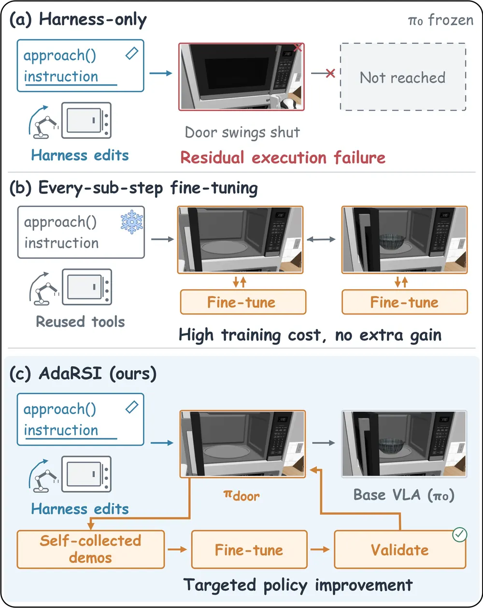
무슨 문제인가
사전학습된 VLA는 처음 보는 여러 단계 과제를 하다가 중간에 자주 실패함. 실패 원인은 VLA를 부르는 방식(지시문, 시작 자세, 접근 방향)일 수도 있고, VLA가 그 동작 자체를 못 하는 것일 수도 있음. 도구와 절차(harness)만 고치는 기존 방법은 VLA가 할 수 있는 동작 범위를 넘지 못함. 반대로 VLA 가중치를 바로 학습하는 방법은 부르는 방식만 바꾸면 풀릴 실패에도 데이터와 GPU를 씀. 성공률이 낮다는 사실만으로는 둘 중 무엇을 고쳐야 하는지 알 수 없음.
어떻게 푸나
AdaRSI(on-demand recursive self-improvement)는 언어모델 coding agent가 harness와 VLA 가중치를 순서대로 고치는 틀임. 먼저 agent가 VLA 호출, 관측, 로봇 위치 조정 같은 도구를 코드로 쓰고 과제 절차를 만든 뒤 실행 결과를 보며 고침. 이 단계에서 기본 VLA(RoboCasa365는 GR00T N1.5, LIBERO-Pro 2.0과 실로봇은 π0.5)는 고정됨. 다음으로 여전히 불안정한 sub-step에 다른 지시문, 시작 자세, 접근 방법을 시험함. 그래도 안 되면 그 sub-step을 VLA 능력 부족(executor-limited)으로 판정함. 판정된 sub-step은 VLA rollout이나 agent가 짠 제어 프로그램으로 여러 번 시도하고 성공한 궤적만 demonstration으로 남김. 모은 데이터로 기본 VLA를 잠깐 fine-tuning한 임시 probe를 만들고, 같은 조건의 검증에서 기본 VLA보다 나을 때만 데이터를 받아들임. 받아들인 데이터를 과제 전체에서 모아 specialist VLA 하나를 학습함. 배포 때는 지정된 sub-step에만 specialist를 부르고 나머지는 기본 VLA를 씀. 각 개발 round가 끝나면 요약 agent가 기록을 shared experience로 정리해 다음 round의 진단과 데이터 수집에 넘김.
결과
- RoboCasa365(주방 시뮬레이션 조작 benchmark, 여기서는 target 과제 50개로 평가) Composite-Unseen 16개 과제 평균 성공률이 GR00T N1.5 단독 4.6%에서 13.3%로 오름. harness만 고친 경우는 9.9%이고, harness 없이 가중치만 학습한 경우는 7.3%임.
- 모든 조작 sub-step을 학습하는 Always train은 같은 suite에서 11.1%임. AdaRSI는 이보다 높은 13.3%를 내면서 GPU 시간은 2,106분 대 6,113분, demonstration은 894개 대 2,498개를 씀.
- LIBERO-Pro 2.0(카메라 위치, 행동 지연 등 교란을 넣은 LIBERO 과제)의 47개 instance에서 π0.5 단독 32.9%가 49.1%로 오름. harness만 고치면 39.1%임. 가장 큰 차이는 행동 지연 교란으로 harness만 쓴 16.2%에서 40.6%로 오름.
- 실로봇 AGIBOT A3U의 3개 과제 150회 시험에서 사람이 sub-task 순서를 정해 준 VLA는 82.0%, harness만 쓴 agent는 92.0%, AdaRSI는 94.7%임. 쓰러진 콜라병을 IK(inverse kinematics) 제어로 세우는 demonstration 20개를 스스로 모아 회복 skill로 학습했고, 이것이 두 번째 과제(콜라는 바구니, 빵은 상자에 넣기)의 개선에 들어감.
한계
Composite-Unseen 절대 성공률은 13.3%로 여전히 낮고, 16개 과제 중 5개는 harness만 쓴 경우보다 내려감(WashFruitColander 48%에서 32%). 시뮬레이션 데이터 수집은 privileged state와 반복 시도에 기대며 성공률은 16.9%임. 실로봇은 AGIBOT A3U와 SO-ARM101에서 과제 3개씩 모두 6개이고 설정당 10회 시험이며, harness 단계에서 이미 성능이 대부분 오름. 코드 공개 여부는 본문에서 확인 불가함.
누리랩 연구와의 연결
- failure를 호출 방식 문제와 VLA 능력 문제로 나누는 failure attribution 절차가 failure diagnosis·recovery 연구에 바로 쓸 수 있는 틀임. 쓰러진 병을 회복 skill로 스스로 학습하는 사례도 recovery 데이터 수집의 비교 대상이 됨.
- 임시 probe로 자가 수집 데이터의 쓸모를 검증하고 sub-step 단위로 specialist를 부르는 구조는 VLA test-time adaptation과 skill chaining 연구에서 baseline으로 쓸 수 있음.
10
72점
VLRLA: Deployment-Time Adaptation of Vision-Language-Action Models through In-Context Reinforcement Learning
VLA
relevance 10/10
ICLR 양식 (추정)
Artificial Intelligence (cs.AI)
π0.5 같은 VLA의 가중치를 고정한 채, 지난 시도의 관측·행동·reward를 memory로 읽어 배포 중에 행동을 고치는 in-context RL 모듈을 붙임. RoboTwin 12개 과제 평균 성공률을 50.9%에서 63.4%로 올림.
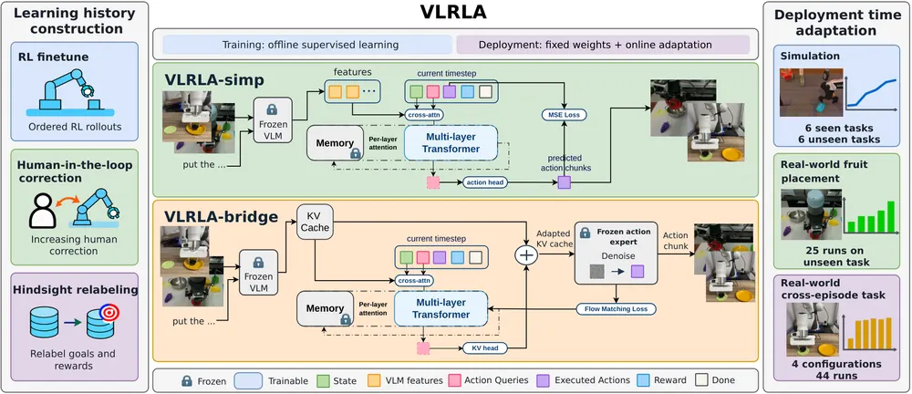
무슨 문제인가
VLA는 demonstration으로 배우므로 배포 현장에서 처음 보는 시점, 조명, 지시문을 만나면 성공률이 낮아짐. 이를 고치려면 지금은 online RL이나 사람 교정으로 가중치를 다시 학습해야 함. 이 방식은 데이터 수집에 수십 분에서 수 시간이 들고, 과제마다 hyperparameter를 맞춰야 하며, 환경마다 policy를 따로 고쳐야 함. 가중치를 건드리지 않고 배포 중 쌓인 경험과 reward만으로 행동을 고치는 방법은 VLA에서 아직 없었음.
어떻게 푸나
VLRLA는 Algorithm Distillation(RL 학습 과정을 순서대로 기록한 데이터로 sequence model을 학습해서 학습 알고리즘 자체를 흉내 내게 하는 방법)을 pretrained VLA에 옮긴 framework임. 입력은 현재 관측·지시문과, 같은 과제의 이전 episode들에서 나온 행동·reward·종료 신호의 기록임. 이 기록은 Transformer-XL식 recurrent memory에 쌓여 episode 경계를 넘어 유지됨. 다른 변형인 VLRLA-simp은 고정된 visual-language encoder 위에 recurrent memory를 가진 Transformer와 MLP를 학습해 action을 결정적으로 바로 출력함. 주 변형인 VLRLA-bridge는 VLM과 action expert를 모두 고정하고, 그 사이에 학습되는 bridge만 둠. bridge는 memory와 현재 KV cache를 보고 KV cache에 더할 low-rank residual을 출력하고, 고정된 action expert가 바뀐 cache로 action chunk를 만듦. 학습용 기록은 시뮬레이션 RL 학습 중 rollout, 사람 개입 비율을 점점 늘린 교정 데이터, 목표와 reward를 바꿔 붙이는 hindsight relabeling 중 하나로 만들고, 배포 때는 가중치를 바꾸지 않음.
결과
- RoboTwin(양팔 조작 시뮬레이션 benchmark) 12개 과제, 과제당 128개 무작위 환경에서 잰 평균 성공률이 fine-tuning한 π0.5의 50.9%에서 63.4%로 오름. 12개 과제 모두에서 π0.5보다 높음. 가중치를 직접 갱신하는 GRPO는 60.0%, reward를 쓰지 않는 in-context 방법 RoboTTT(저자 재구현)는 58.2%임.
- 12개 과제 중 학습에 없던 6개만 보면 평균 성공률이 π0.5의 53.3%에서 60.6%로 오름. GRPO의 60.8%와 거의 같음.
- 단순 변형 VLRLA-simp으로 시뮬레이션 과제 2개에서 memory를 0으로 지우면 성공률이 0 근처에 머묾. 첫 episode 기록만 반복해서 넣으면 한 번 오른 뒤 더 오르지 않음. 기록이 계속 쌓일 때만 성공률이 episode를 거치며 오름.
- 실로봇 과일 옮기기에서 과일마다 15회 평가함. 네 번째 시도의 성공률이 π0.5보다 사과 13.3퍼센트포인트, 스타프루트 26.7퍼센트포인트, 포도 6.7퍼센트포인트 높음. 첫 시도는 π0.5보다 약간 낮음.
한계
학습에 없던 과제에서는 가중치를 갱신하는 GRPO보다 나은 점을 보이지 못함. 실로봇 실험은 과일 옮기기와 접시 색 맞히기 두 종류이고, 과일별 15회 평가라 차이는 1~4회의 성공 차이임. 학습용 기록을 만들려면 시뮬레이션 RL이나 사람 교정 데이터가 미리 있어야 하고, 코드 공개 주소는 본문에서 확인 불가함.
누리랩 연구와의 연결
- reward를 memory에 넣어 가중치 고정 VLA를 배포 중에 고치는 방식이라, test-time optimization과 failure recovery 연구에서 바로 비교 대상이 됨. 실패한 episode의 기록이 다음 시도를 바꾸는 구조는 robot memory 연구와도 직접 이어짐.
- 실로봇 접시 색 과제는 reward를 주는 접시 색을 policy에 알려 주지 않고, 지난 시도의 reward로 맞는 접시를 찾게 함. 이 과제의 학습 데이터는 같은 첫 시도에 reward만 다르게 붙인 counterfactual 쌍으로 만듦. 이 방법은 counterfactual reasoning 데이터 구성에 가져다 쓸 수 있음.
11
72점
Imagining Goals with Geometric Horizon Models for Policy Generalization
RL
relevance 9/10
ICLR 양식 (추정)
Machine Learning (cs.LG)
짧은 궤적만 있는 offline 데이터에서, 여러 궤적을 이어 붙여야 도달하는 미래 상태를 생성 모델로 뽑아 goal-conditioned BC의 학습 goal로 섞음. OGBench(offline goal-conditioned RL benchmark) pointmaze stitch 과제 4개의 평균 성공률이 31%에서 79%로 오름.
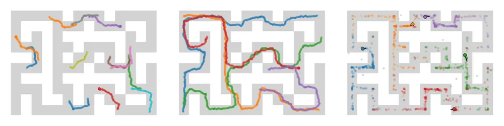
무슨 문제인가
goal-conditioned BC는 같은 궤적 안에서 뒤에 나온 상태만 goal로 삼아 학습함. 그래서 시작 상태와 goal이 서로 다른 궤적에 있어 여러 궤적을 이어야 풀리는 과제(stitching, compositional generalization)에서 성능이 낮음. 기존 보완책인 clustering 기반 goal 증강은 가까운 상태끼리 한 번만 이어 붙이고 상태 간 거리 기준 같은 휴리스틱에 기댐. world model로 한 step씩 rollout해 새 경험을 만드는 방법은 horizon이 길어질수록 오차가 쌓여 쓰기 어려움.
어떻게 푸나
TD-Aug(TD 기반 goal 증강)는 먼저 geometric horizon model(GHM)을 offline 데이터로 학습함. GHM은 상태와 행동을 입력받아, 앞으로 할인율 γ에 따라 가중된 시점에 도달할 미래 상태(successor measure)를 한 번에 샘플링하는 flow matching 생성 모델임. TD 방식 bootstrapping으로 학습하므로, 데이터를 모은 여러 policy를 섞은 policy가 갈 미래를 근사함. 그 결과 여러 궤적을 이어야 도달하는 상태도 생성함. 저자는 새 목적함수 MCHC-β를 제안함. 실제 궤적의 다음 상태와 몇 step 뒤 상태(Monte Carlo 샘플)를 정답으로 쓰고, 그 뒤 상태에서 다시 bootstrap함. 이 목적함수는 실제 데이터 비중을 유지한 채 긴 horizon(γ=0.998, 기대 horizon 500 step)까지 학습하게 함. 다음으로 BC policy를 학습할 때 goal의 절반(α=0.5)은 기존처럼 같은 궤적의 미래 상태로, 나머지 절반은 GHM이 생성한 상태로 채움. 이미지 입력 과제에서는 autoencoder의 latent 공간에서 GHM과 policy를 학습함.
결과
- pointmaze stitch(짧은 궤적으로 학습하고 미로를 가로지르는 긴 goal로 평가하는 OGBench 내비게이션 과제) 4개에서 결과를 봄. 평균 성공률이 flow 기반 BC(GCFBC)의 31%에서 TD-Aug로 79%로 오름. 가장 큰 giant 미로에서는 0%에서 54%로 오름. 3 seed 평균임.
- 같은 표에서 clustering 기반 증강(Cluster-Aug)은 평균 50%, 1-step 모델 rollout 증강(Dyn-Aug)은 46%, 이어 붙이기 없이 실제 미래만 흉내 내는 MC-Aug는 37%임. offline GCRL 방법 중 가장 높은 QRL은 58%임. MC-Aug는 horizon 100, TD-Aug는 500으로 설정이 달라 TD 목적함수만의 효과로 분리된 비교는 아님.
- 이미지 입력 visual-antmaze stitch 과제 2개에서 평균 성공률이 autoencoder BC 29%에서 TD-Aug 56%로 오름. HIQL(69%)보다는 낮음.
- 저자는 궤적마다 pick-and-place 같은 단일 동작 하나만 담은 조작 stitch 데이터를 새로 만들고 여러 단계 과제로 평가함. 이 데이터에서 평균 성공률이 GCFBC 13%에서 TD-Aug 52%로 오름. 정답 goal 표현(oracle)을 쓴 cube-double, cube-triple, puzzle-4x4 기준이며, 긴 play 데이터로 학습한 BC의 44%보다도 높음.
한계
모든 실험이 OGBench 시뮬레이션이며 실로봇 결과는 없음. 조작 과제는 이미지가 아니라 정답 상태 표현을 goal로 씀. 저자도 고차원·부분 관측 로봇 과제로 TD 기반 GHM 학습을 늘리는 것을 미해결 과제로 남김. MCHC-β는 짧고 단일 policy로 모은 궤적의 Monte Carlo 샘플을 쓰므로 혼합 policy의 미래 분포를 편향되게 근사함.
누리랩 연구와의 연결
- 생성한 미래 상태를 goal로 다시 쓰는 방식은 짧은 시연을 이어 long-horizon 조작을 풀려는 skill chaining 연구에서 VLA 학습 데이터 증강의 비교 대상으로 쓸 수 있음.
- GHM은 한 step씩 rollout하지 않고 먼 미래 상태를 한 번에 뽑는 world model임. inference-time planning이나 도달 가능성 기반 failure detection에 쓸 수 있는지 시험해 볼 만함.
12
72점
Active Generative Simulation: Meta-Learning What to Simulate for Sim-and-Real Policy Co-Training
Sim-and-Real
relevance 9/10
CoRL 2026 (comments 표기)
Robotics (cs.RO)
simulator가 어떤 설정의 데이터를 만들지를 실제 demonstration 기준으로 meta-learning해 고르는 MetaGenSim을 제안함. 실로봇 4개 과제의 전체 성공 횟수가 균일 생성 대비 23/80에서 58/80으로 오르고, 전문가가 손으로 맞춘 설정(57/80)과 비슷함.
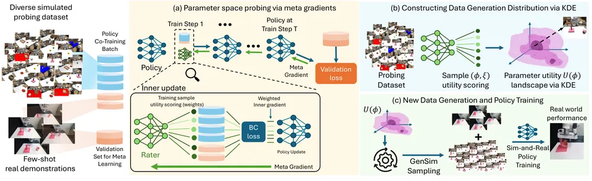
무슨 문제인가
실제 demonstration이 적을 때 simulation 데이터를 섞어 학습하는 sim-and-real co-training이 자주 쓰임. 그런데 카메라 각도, 테이블 색, 물체 배치, 과제 종류가 실제와 어긋난 simulation 데이터는 도움이 적고 오히려 성능을 낮추기도 함. 지금은 설정을 균일하게 뽑거나, 이미 만든 데이터에서 비슷한 것을 골라 쓰거나(retrieval), 전문가가 손으로 맞춤. 손으로 맞추기는 차원이 높으면 힘들고, simulator가 목표 과제를 그대로 만들 수 없으면 맞출 기준도 없음.
어떻게 푸나
저자는 이 문제를 Active Generative Simulation으로 정의함: simulation 생성 파라미터의 분포를 실제 과제 성능이 최대가 되도록 고르는 bilevel 최적화임. MetaGenSim은 먼저 파라미터 공간에서 균일하게 뽑은 probing dataset(파라미터와 생성 궤적의 쌍, 실로봇 실험에서 800개)을 만듦. 다음으로 관측-행동 쌍마다 점수를 매기는 rater network를 학습함. inner loop에서는 rater 점수로 simulation·실제 sample에 가중치를 주고 BC-RNN(RNN 기반 behavior cloning) policy를 T step 업데이트함. outer loop에서는 따로 떼어 둔 실제 demonstration의 behavior cloning loss를 줄이도록 이 업데이트를 거슬러 미분한 meta-gradient로 rater를 고침. 학습된 rater 점수를 궤적별로 평균해 각 파라미터의 utility로 삼고, 과제 종류는 softmax로, 연속 파라미터는 가중 KDE(kernel density estimation)로 분포를 만듦. 이 분포에서 파라미터를 뽑아 MimicGen(소수 시연을 새 물체 배치로 바꿔 시연을 자동 생성하는 도구)으로 새 demonstration을 만들고, 최종 policy를 실제 데이터와 함께 co-training함.
결과
- 실로봇 Franka Panda 4개 과제(큐브 쌓기, 머그를 통에 넣기, 그릇을 쟁반에 놓기, 머그 걸기)에서 과제마다 실제 demonstration 10개를 씀. Diffusion Policy의 전체 과제 성공 횟수(과제당 20회 평가, 합계 80회)가 UniformGen 23/80에서 MetaGenSim 58/80으로 오름. 실제 데이터만 쓰면 26/80이고, 전문가가 맞춘 Oracle은 57/80임.
- 같은 조건에서 retrieval baseline STRAP과 IWR은 27/80과 33/80임. 균일 생성 demonstration을 1600개에서 8000개로 늘려도 큐브 쌓기(stackCube)와 머그를 통에 넣기(mugBin) 성공 횟수는 그대로이거나 내림. MetaGenSim의 생성 demonstration은 800개임.
- 생성 분포는 가벼운 BC-RNN으로 고르고, 그 데이터로 π0.5 VLA를 fine-tuning함. 4개 과제 전체 성공 횟수가 MetaGenSim 52/80으로, UniformGen 30/80과 실제 데이터만 쓴 19/80보다 높음. Oracle은 56/80임.
- MimicLabs 시뮬레이션 8개 과제(배경과 테이블 질감을 바꿔 도메인 차이를 만든 조작 과제)에서 평균 성공률이 UniformGen보다 BC-RNN은 18.6퍼센트포인트, Diffusion Policy는 13.3퍼센트포인트 높음.
한계
파라미터 공간과 생성 파이프라인은 사람이 정해야 하고, 그 밖의 요인(실로봇 실험의 배경, 조명)은 맞추지 못함. probing은 한 번의 균일 샘플링이라 좁은 고효용 영역을 놓칠 수 있고, 파라미터 차원이 커지면 KDE가 불안정해짐. 실로봇 평가는 4개 과제와, simulation에 똑같은 과제가 없어 기존 기술을 조합해야 하는 머그를 쟁반에 놓기(mugTray) 과제 하나이고, 과제당 20회뿐임. KDE temperature를 4배로 올리면 stackCube 전체 성공이 0/20으로 내려 하이퍼파라미터에 민감함. 본문에 코드 저장소 주소는 없음.
누리랩 연구와의 연결
- VLA fine-tuning용 데이터를 무엇으로 채울지 고르는 방법임. 작은 proxy policy로 고른 분포가 π0.5로 옮겨 간다는 결과는 우리 VLA 실험의 simulation 데이터 구성에 바로 쓸 수 있음.
- rater의 meta-gradient 점수를 실패 사례 demonstration에 맞추면, failure recovery용 simulation 데이터를 자동으로 고르는 실험으로 이어질 수 있음.
13
72점
StateCraft: Augmenting Video World Models with Abstract-State Reasoning
World Model
relevance 7/10
ICLR 양식 (추정)
Computer Vision and Pattern Recognition (cs.CV)
video world model 옆에 VLM이 갱신하는 graph 형태의 abstract state를 두어, 화면에 보이지 않는 곳의 변화까지 기억하며 다음 frame을 그리게 함. 파일 탐색기 시뮬레이션에서 폴더를 떠났다가 최대 512 action 뒤에 돌아와도 첫 방문 화면과의 SSIM이 0.9 근처로 유지됨.
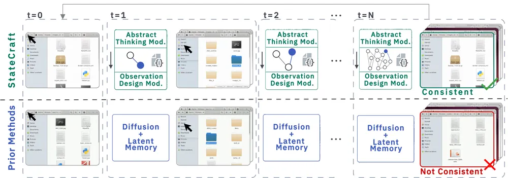
무슨 문제인가
video world model은 한 번에 세계의 일부만 화면으로 그리므로, 오래 상호작용하려면 화면 밖에서 일어난 변화를 추적해야 함. 기존 memory는 과거 frame, 인코딩된 frame cache, 3D point cloud, recurrent state처럼 본 것을 저장하는 방식임. 이런 memory는 대부분 저장한 내용이 고정되어 있어서, action이 화면 밖의 내용을 바꾸면 반영하지 못함. 예를 들어 폴더 안 파일을 지우면 휴지통에 그 파일이 생겨야 하지만, 휴지통을 열기 전까지 이 변화는 어느 frame에도 나타나지 않음.
어떻게 푸나
StateCraft는 세계를 abstract state와 visual state로 나눔. abstract state는 폴더나 대화상자 같은 view를 node로, 그 안의 파일 이름·종류·위치를 component로 갖는 graph임. 매 step에서 low-rank fine-tuning한 작은 VLM이 현재 node, retriever가 memory에서 찾은 관련 node, action을 텍스트로 받음. VLM은 픽셀을 보지 않고, 전이 종류(새 view, 같은 view, 재방문)와 다음 node, graph에 더할 diff를 출력함. 다음 node는 component별 문자열로 나뉘어 고정된 text encoder로 embedding되고, video diffusion model이 cross-attention으로 이를 받아 이전 frame과 action과 함께 다음 frame을 생성함. 학습 데이터는 Ubuntu의 GNOME Files에서 accessibility tree로 누를 수 있는 요소를 골라 모은 1,956개 trajectory(586,210 action)임.
결과
- 파일 탐색기 trajectory 240개(각 300 action)에서 전체 frame PSNR을 잼. 같은 backbone(CF++: Wan2.1 기반 video diffusion model)만 쓰면 18.49dB이고, StateCraft는 28.78dB임. 이전 GUI world model인 NeuralOS는 20.92dB임. 파일 목록 영역의 글자 SSIM은 0.85로, CF++ 0.16, NeuralOS 0.15보다 높음.
- 폴더에 들어갔다가 다른 폴더를 거쳐 32~512 action 뒤 돌아오는 920개 trajectory에서, 재방문 frame과 첫 방문 frame의 SSIM이 0.9 근처로 유지됨. baseline 대부분은 0.5~0.6이며, 0.5는 그럴듯하지만 다른 폴더를 그렸을 때의 값임. 추론 때 graph 입력을 0으로 지우면 64 action 뒤 재방문 SSIM이 0.878에서 0.656으로 내림.
- graph를 직접 고쳐 다음 frame을 바꾸게 한 293개 clip에서 생성 결과가 수정을 따른 비율은 81%이고, graph를 고치지 않은 같은 모델의 대조 생성에서는 0%임. 다시 들어간 폴더의 파일 종류를 화면 밖에서 바꾼 경우는 98%, 빈 곳에 새 파일을 넣은 경우는 48%임. 수정하지 않은 영역의 PSNR은 graph를 고치지 않은 생성 37.7dB, 고친 생성 23.88dB임.
- 3D 실내 시뮬레이션(OmniGibson)에서 스위치가 보이지 않는 방의 조명을 바꾸는 실험을 함. 처음 보는 집 2채의 120개 episode에서 조명 상태 판별 AUC가 0.864로, state 입력 없는 CF++의 0.542보다 높음.
한계
실험은 파일 탐색기 한 가지와 미리 정한 state schema에서만 했고, 3D 실험의 state 갱신은 학습한 VLM이 아니라 시뮬레이터가 넣어 줌. 처음 보는 파일 조작에서 node 정확도는 같은 Qwen3.5-0.8B를 few-shot prompting으로 쓰면 1.00, fine-tuning하면 0.00으로, fine-tuning으로 일반화를 잃음. 재방문 SSIM은 정답과의 비교가 아니라 자기 첫 방문과의 비교이며, 코드와 데이터는 공개 예정으로만 적혀 있음.
누리랩 연구와의 연결
- 화면 밖 변화를 graph로 기록하고 이를 video model의 조건으로 넣는 구조는, 서랍 안에 넣어 둔 물체처럼 가려진 상태를 다루는 robot memory와 scene graph 기반 world model에 그대로 옮겨 볼 수 있음.
- graph를 직접 고쳐 생성을 바꾸는 실험은, world model 안에서 물체 상태를 바꿔 보는 counterfactual rollout을 만드는 도구로 쓸 수 있음.
14
70점
Outperforming 1000 Euclidean Layers With Hyperbolic Goal-Conditioned RL
RL
relevance 7/10
ICLR 양식 (추정)
Machine Learning (cs.LG)
contrastive RL의 critic이 쓰는 거리를 Euclidean 거리에서 hyperbolic 공간의 geodesic 거리로 바꿔, 미로처럼 벽을 돌아가야 하는 goal-reaching 과제에서 얕은 network로 깊은 network를 이김. Humanoid U-Maze에서 depth 64 모델이 goal에 머문 step 수가 240으로, 선행 논문이 보고한 depth 1024 Euclidean 모델의 약 100보다 많음.
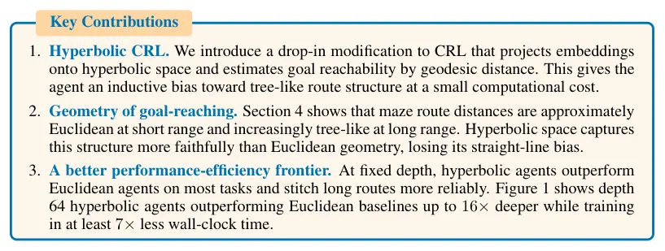
무슨 문제인가
contrastive RL(CRL)은 state-action embedding과 goal embedding 사이의 Euclidean 거리로 goal에 닿을 수 있는지를 점수로 매김. 미로에서는 벽 때문에 실제로 걸어야 하는 경로 길이(route distance)가 직선 거리와 크게 달라지고, Euclidean embedding은 직선 거리 쪽으로 치우침. 기존 연구는 network를 1024층까지 깊게 쌓아 이 문제를 넘었지만, 학습 시간이 depth에 비례해 늘어남. 저자들은 깊은 network가 용량 일부를 embedding 기하와 환경 기하의 차이를 메우는 데 쓴다고 가정함.
어떻게 푸나
Hyperbolic CRL은 CRL의 InfoNCE 학습 목표는 그대로 두고 거리 함수만 바꿈. Euclidean ResNet encoder가 state-action과 goal을 각각 벡터로 만들면, 이 벡터를 hyperboloid(곡률이 음수인 공간의 한 표현) 원점의 접선 벡터로 보고 exponential map으로 곡면 위에 올림. 그 뒤 hyperbolic 공간 안에서 동작하는 linear layer 하나를 거치고, 두 점 사이 geodesic 거리의 음수를 critic 값으로 씀. hyperbolic 공간은 좁은 범위에서는 평면과 비슷하고 넓은 범위에서는 나무 구조와 비슷함. 저자들은 Ant U5-Maze의 route distance가 짧은 범위에서는 평면에 가깝고 긴 범위로 갈수록 나무 구조에 가까워짐을 δ-hyperbolicity(네 점 거리가 나무와 얼마나 닮았는지 재는 값)로 보임. 곡률 크기는 c=0.5로 고정하고, depth 16 기준 추가 parameter는 전체의 약 0.26%임.
결과
- Ant U5-Maze에서 직선 거리는 비슷하고 route distance가 10 world unit 이상 차이 나는 goal 쌍을 골라, critic이 먼 경로에 더 큰 embedding 거리를 주는 비율을 잼. hyperbolic critic은 82.5%, Euclidean critic은 59.4%, 직선 거리 자체는 50.7%임(seed 10개 평균).
- Humanoid U-Maze(사람형 로봇이 U자 미로를 걸어 goal에 도달하는 과제)에서 depth 64 hyperbolic 모델은 goal에 240 step 머묾. 선행 연구의 depth 1024 Euclidean 모델은 약 100 step임. Euclidean 곡선은 선행 논문 그림에서 가져온 값이고 다시 돌린 것이 아님.
- 같은 과제에서 parameter 수는 12.9M 대 169.9M, H100 한 장의 초당 환경 step 수는 3,722 대 303임. 같은 depth 16에서는 hyperbolic head 때문에 처리량이 6.27% 낮아짐.
- 오프라인 OGBench(미리 모은 데이터로 미로 navigation과 짧은 궤적 이어 붙이기를 평가하는 benchmark) 8개 과제 모두에서 Euclidean CRL보다 평균 성공률이 높음. antmaze-giant-navigate는 16.9%에서 38.7%로, antmaze-medium-stitch는 43.7%에서 77.2%로 오름(seed 8개).
한계
벽이 없는 Humanoid 과제에서는 기본 곡률 c=0.5일 때 Euclidean 모델보다 낮고(273 대 521 step), 곡률을 0.01까지 낮춰야 비슷해짐. 과제마다 맞는 곡률이 다르지만 곡률을 학습으로 정하는 방법은 불안정해 쓰지 못했음. geodesic 거리는 대칭이라 한쪽으로만 갈 수 있는 이동을 표현하지 못하고, 모든 실험은 시뮬레이션 안의 state 입력 과제뿐임.
누리랩 연구와의 연결
- goal-conditioned policy의 critic 거리 공간을 환경 구조에 맞추는 representation 설계 사례임. navigation과 long-horizon planning에서 value를 직선 거리 대신 경로 구조로 배우게 하는 방법으로 비교해 볼 수 있음.
- 저자는 critic gradient가 미로 경로 방향과 벽을 뚫는 직선 방향 중 어느 쪽에 가까운지 cosine similarity로도 잼. 이 분석은 policy가 왜 잘못된 지름길로 가는지 진단하는 failure analysis 도구로 쓸 수 있음.
15
68점
OneLA: Learning Many Worlds from Latent Actions
World Model
relevance 8/10
Computer Vision and Pattern Recognition (cs.CV)
게임·실내 이동·주행·로봇 조작 영상에서 action label 없이 공통 latent action 공간을 배우고, 각 도메인의 조작 명령을 그 공간으로 옮겨 world model 하나로 영상을 생성함. 영상에서 뽑은 동작을 다른 장면에 옮겼다가 되돌리는 시험에서 회전 오차를 가장 강한 baseline보다 24.8% 줄임.
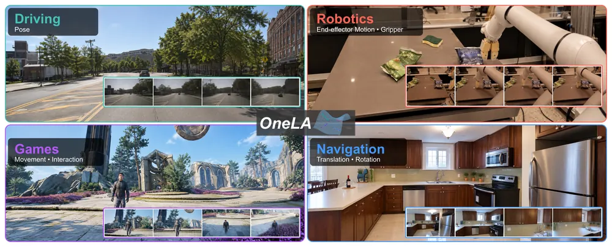
무슨 문제인가
게임은 키보드, 자동차는 pose, 로봇은 end-effector와 gripper 명령을 쓰므로 world model을 여러 도메인에 걸쳐 학습하려면 공통 조작 공간이 필요함. 그런데 인터넷 영상 대부분에는 명령 기록이 없음. 영상의 프레임 쌍에서 latent action을 추론하는 기존 방법은 동작 외에 장면 겉모습이나 통제되지 않은 변화까지 담기 쉬움. 이를 막으려고 agent mask, optical flow, 로봇 action label 같은 보조 신호를 쓰지만, 이런 신호는 모든 영상 출처에 다 있지 않음.
어떻게 푸나
OneLA(여러 도메인이 함께 쓰는 latent action 공간 하나를 배우는 framework)는 세 단계로 학습함. 첫 단계에서 LAM(latent action model, 프레임 두 장을 받아 그 사이 변화를 32차원 연속 계수로 내는 inverse dynamics 모델)을 action label 없는 영상 클립 179만 개로 학습함. 계수는 QR 분해로 서로 직교하는 단위 벡터만 갖게 만든 공유 motion dictionary와 곱해져 임베딩이 되고, decoder는 현재 프레임과 이 임베딩으로 다음 프레임을 복원함. 직교 dictionary는 계수의 크기를 dictionary 쪽에서 상쇄하지 못하게 하므로, KL 정규화와 ℓ1 sparsity가 모든 출처에서 같은 기준으로 작동함. 둘째 단계에서 LAM을 고정하고, label이 있는 궤적으로 도메인별 작은 MLP를 학습해 키보드·pose·로봇 action 같은 원래 명령을 latent action 공간으로 옮김. 셋째 단계에서 Wan2.2-TI2V-5B 기반 diffusion transformer가 첫 프레임과 latent action 열(영상에서 추론한 것 또는 MLP로 옮긴 명령)을 입력받아 미래 영상을 생성함. 이때 실제로 일어난 전이의 latent action도 함께 예측하게 하고, 그 정답은 고정된 LAM이 생성 대상 영상에서 뽑음.
결과
- action cycle transfer(원본 영상에서 뽑은 latent action으로 다른 장면 영상을 만들고, 그 영상에서 다시 뽑아 원래 장면으로 되돌린 뒤 원본과 비교함)을 40회 함. 회전 오차가 기존 latent action 방법 OLaF의 0.496도에서 0.373도로 내림. 이동 오차(추정 궤적 기준 척도라 물리 단위 없음)는 0.092에서 0.077로 내림.
- 고정된 LAM 표현 위 linear probe로 action label을 맞히는 macro-F1이 AgiBot(양팔 로봇 조작 데이터) 54.53으로, 가장 높은 baseline OLaF의 48.90보다 높음. MIND(게임 장면 8가지 이동 조작 영상)에서 1인칭으로 맞춘 probe를 3인칭에 그대로 쓴 F1은 78.31로, 가장 높은 baseline 67.65보다 높음.
- 같은 데이터와 학습 조건에서 label 없는 영상에 추론한 latent action 대신 0 벡터를 넣으면 nuScenes 생성 PSNR이 16.13에서 13.65로 내림. 실제 장면 생성의 HPSv3(사람 선호를 흉내 낸 화질 점수)도 5.95에서 4.94로 내림.
- latent action 예측 손실을 더하면 생성 영상 50개 중 사람이 눈으로 보고 충돌이 있다고 판정한 비율이 36%에서 22%로 내림. 무엇과 무엇의 충돌인지는 본문에 정의되어 있지 않음.
한계
평가는 모두 생성 영상의 화질과 궤적 오차이고, 이 world model로 policy를 학습하거나 planning을 하는 closed-loop 실험은 없음. RT-1 영상 예측에서는 PSNR 17.78로 OLaF의 18.78보다 낮아 로봇 도메인에서는 baseline을 넘지 못함. 원래 명령을 latent 공간으로 옮기는 MLP에는 여전히 도메인마다 label이 있는 궤적이 필요함.
누리랩 연구와의 연결
- 로봇 영상과 사람·게임 영상을 같은 action 공간에서 다루는 방식이라, label이 적은 로봇 데이터로 action-conditioned world model을 학습할 때 비교 대상이 됨. 다만 RT-1 결과가 baseline보다 낮으므로 조작 과제에 그대로 쓰기 전에 검증이 필요함.
- 영상에서 동작만 뽑아 다른 장면에 옮기는 cycle transfer는 world model 기반 counterfactual rollout(같은 동작을 다른 장면에서 했다면 어떻게 될지)을 만드는 도구로 쓸 수 있음.
오늘의 흐름
- 고정 VLA를 배포 중에 고치기: policy 가중치는 그대로 두고 실행 중에 행동만 바꿈. Back on Track은 진행이 멈추면 world model로 교정 행동을 찾고, ACRO는 지나온 더 나은 지점으로 로봇을 되돌리고, VLRLA는 지난 시도의 기록을 memory로 읽어 행동을 바꿈. Back on Track, ACRO, VLRLA
- world model을 VLA와 planner에 맞게 고치기: VLA에 world model을 붙이는 방식을 같은 조건에서 비교하거나, 후보 action 평가를 행렬 곱으로 줄이거나, 화면 밖 변화를 graph로 기억하게 함. OneLA는 action label 없는 여러 도메인 영상에서 공통 latent action을 배워 world model 하나로 영상을 생성함. What Matters for World Modeling in VLA, Action Jets, StateCraft, OneLA
- goal-conditioned RL의 표현 공간 다시 고르기: critic이 쓰는 거리 공간을 구면이나 hyperbolic 공간으로 바꾸거나, 생성 모델로 먼 미래 상태를 goal로 만들어 짧은 궤적을 이어 붙임. 세 논문 모두 long-horizon 도달 과제에서 성능이 오름. Hyperspherical Contrastive Representations, Hyperbolic Goal-Conditioned RL, Imagining Goals
- 로봇 학습 데이터와 기억을 고르기: AdaRSI는 반복 실패하는 sub-step만 골라 스스로 demonstration을 모음. Robota-Embed는 과거 경험의 다음 구간을 검색해 policy context로 넣음. MetaGenSim은 simulator가 만들 데이터 설정을 실제 demonstration 기준으로 고름. AdaRSI, Robota-Embed, Active Generative Simulation
- action과 접촉의 표현: 균등 bin으로 이산화한 action이 연속값 action head만큼 성공률을 낸다는 비교 결과가 나옴. FACT는 미래 손끝 힘을 action과 함께 생성하는 양손 dexterous policy임. Discrete Actions, FACT
해볼 만한 연구
실패 감지 신호 하나로 되돌리기와 교정 행동 중 고르기
- 질문: 고정 VLA가 멈췄을 때 지나온 지점으로 되돌리는 것과 world model 안에서 교정 행동을 찾는 것 중 어느 쪽이 나은지, 같은 실패 감지 신호로 상황마다 고를 수 있는지 밝힘.
- 첫 실험: LIBERO-Goal(언어 목표 조작 과제 10개)에서 로봇 초기 자세와 물체 위치를 흔든 조건을 씀. π0.5에 ACRO식 되돌리기, Back on Track식 교정, 두 방식을 감지 점수로 고르는 방식을 같은 step 예산으로 비교함.
- 가장 가까운 연구: Back on Track은 교정 행동만 쓰고, ACRO는 되돌리기만 씀. 이 연구는 두 복구 수단을 한 감지 신호 위에서 고르는 점이 다름.
Action Jets의 근사 반경을 failure detector로 쓰기
- 질문: Action Jets는 action을 바꿀 때 다음 장면이 어떻게 변하는지 다항식으로 근사하고, 그 근사가 맞는 action 범위(radius of validity)를 함께 계산함. 이 범위 밖으로 나간 action이 실제 실행 실패와 얼마나 겹치는지 밝힘.
- 첫 실험: BridgeData V2(로봇 팔 테이블 조작 데이터) 장면에서 VLA가 낸 후보 action마다 반경 밖 여부로 실행 실패를 예측함. 그 AUROC를 world model 예측 오차 기반 감지와 비교함.
- 가장 가까운 연구: Action Jets는 반경을 근사가 맞는 범위 확인에만 씀. 이 연구는 그 값을 실패 예측 점수로 쓰는 점이 다름.
화면 밖 상태 graph를 로봇 조작 memory로 옮기기
- 질문: 서랍 안 물체처럼 가려진 상태를 graph로 기록해 world model 조건으로 넣으면, 긴 조작 과제에서 가려진 물체 위치를 잊는 실패가 줄어드는지 밝힘.
- 첫 실험: 물체를 서랍에 넣고 다른 일을 한 뒤 다시 꺼내는 과제에서, graph 조건 video world model과 frame 기록만 쓰는 world model의 장면 일관성과 planning 성공률을 비교함.
- 가장 가까운 연구: StateCraft는 파일 탐색기 시뮬레이션에서만 효과를 보였고, 이 연구는 이를 물리 조작 과제로 옮기는 점이 다름. Robota-Embed는 과거 영상 구간을 검색하지만 물체 상태를 따로 기록하지 않음.
꼭 읽을 논문
- Back on Track: 가중치를 볼 수 없는 고정 policy에 실패 감지와 world model 기반 교정을 함께 붙인 방법이라 failure recovery 연구의 비교 기준이 됨.
- ACRO: 되돌아가는 동작까지 step 예산에 넣고도 실로봇 성공률을 43.3%에서 65.0%로 올린 test-time 복구 방법임.
- What Matters for World Modeling in VLA: VLA에 world model을 붙이는 방식과 표현을 같은 조건에서 비교해, 설계를 고를 때 기준표로 쓸 수 있음.
- When Do Discrete Actions Make Good Continuous Controllers?: 이산 action head가 연속값 head만큼 성공률을 낸다는 결과라, 토큰 확률로 불확실성을 추정하는 방법을 VLA에 쓸 근거가 됨.